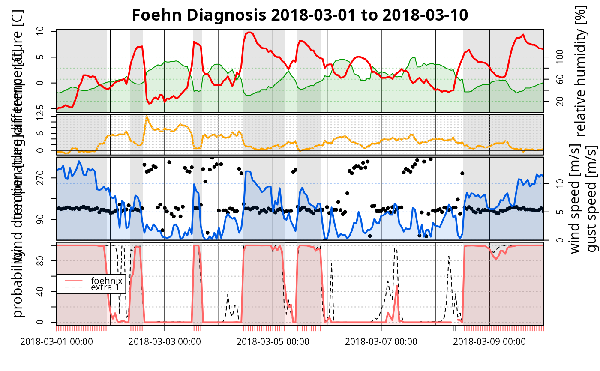
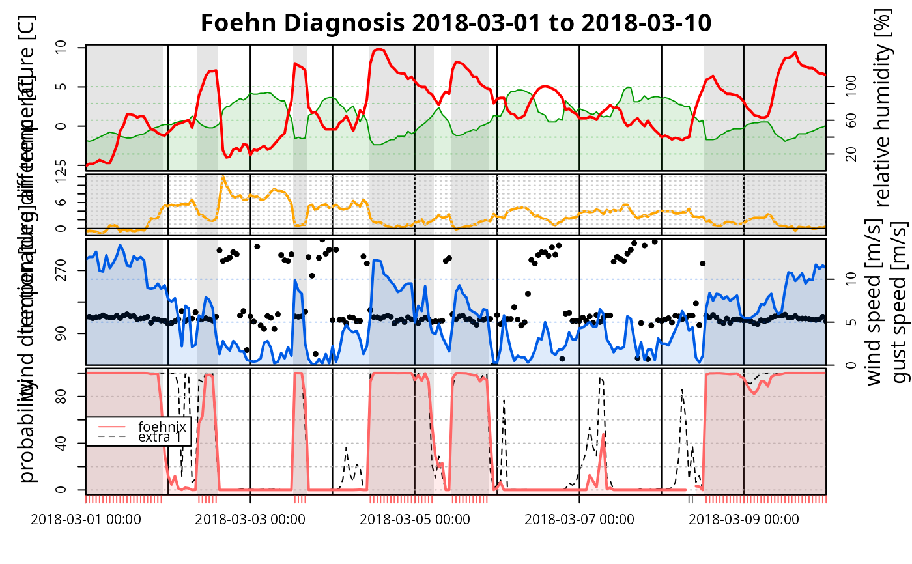

Development time series plots of estimated foehnix
models. TODO: they are very specific at the moment!
tsplot(
x,
start = NULL,
end = NULL,
ndays = 10,
control = tsplot.control(...),
...,
ask = TRUE
)Arguments
- x
object of type
foehnixor a list withfoehnixand univariatezooobjects, see 'Details'.- start
POSIXt object or an object which can be converted to POSIXt.
- end
POSIXt object or an object which can be converted to POSIXt.
- ndays
integer, number of days used when looping trough the time series.
- control
an object of class
tsplot.control.- ...
additional arguments forwarded to
tsplot.control. can be used to rename varaiables and to change the look of the time series plot. Please see 'Examples' and the manual of the functiontsplot.controlfor more details.- ask
logical, default is
TRUE.
Details
Development method to access plausability of the estimated foehn
proabilities. For software release this method should either be removed or
made much more general. At the moment the method heavily depends on the
names of the data used as input for foehnix.
This time series plotting function creates a relatively specific plot
and also expects, by default, a set of default variables and variable
names. This function uses the data set provided on the data
input argument when calling the foehnix method.
As they might differ from the foehnix defaults the
varnames input argument allows to specify custom names.
The ones expected:
t: dry air temperaturecrest_t: dry air temperature crestrh: relative humidity (in percent)crest_rh: relative humidity crest (in percent)diff_t: temperature difference between the crest and the valley stationdd: meteorological wind direction ([0, 360])ff: wind speed
Custom names can be specified by renaming the defaults based on a
named list. As an example: assume that wind direction is called
winddir and wind speed is called windspd in your data set.
Specify the following input to rename/respecify the defaults:
varnames = list(dd = "winddir", ff = "windspd")
Please note: if a variable cannot be found (no matter whether the default variable names have been renamed or not) this specific variable will be ignored. Subplots will not be displayed if no data are available at all.
TODO: describe input 'x'
See also
Examples
# Loading demo data for Tyrol (Ellboegen and Sattelberg)
data <- demodata("tyrol")
filter <- list(dd = c(43, 223), crest_dd = c(90, 270))
# Create foehnix foehn classification model, provide full data
# set with all parameters
mod1 <- foehnix(diff_t ~ ff + rh, data = data,
filter = filter, switch = TRUE, verbose = FALSE)
# Create foehnix foehn classification model, provide full data
# set with all parameters
sub <- subset(data, select = c(rh, ff, dd))
mod2 <- foehnix(ff ~ rh, data = sub, filter = list(dd = c(43, 223)),
verbose = FALSE)
# Plotting the time series of the a period in 2018
tsplot(mod1, start = "2018-03-01", end = "2018-03-10")
 # The same for the second model which is based on a subset
# of the observation data and only includes 'ff' (wind speed)
# 'dd' (wind direction), and 'rh' (relative humitity) of the
# target station. Thus, only a subset of all subplots will be shown.
tsplot(mod2, start = "2018-03-01", end = "2018-03-10")
# To compare the estimated foehn probabilities of both models,
# both 'foehnix' objects can be provided as a list. The plots
# are based on the data of the first object (mod1), the probabilities
# of the second 'foehnix' model will be added in the last subplot.
tsplot(list(mod1, mod2), start = "2018-03-01", end = "2018-03-10")

# If the input is a named list, the names are used for the legend
tsplot(list("full model" = mod1, "subset model" = mod2), start = "2018-03-01", end = "2018-03-10")
# The same for the second model which is based on a subset
# of the observation data and only includes 'ff' (wind speed)
# 'dd' (wind direction), and 'rh' (relative humitity) of the
# target station. Thus, only a subset of all subplots will be shown.
tsplot(mod2, start = "2018-03-01", end = "2018-03-10")
# To compare the estimated foehn probabilities of both models,
# both 'foehnix' objects can be provided as a list. The plots
# are based on the data of the first object (mod1), the probabilities
# of the second 'foehnix' model will be added in the last subplot.
tsplot(list(mod1, mod2), start = "2018-03-01", end = "2018-03-10")

# If the input is a named list, the names are used for the legend
tsplot(list("full model" = mod1, "subset model" = mod2), start = "2018-03-01", end = "2018-03-10")
 # The first element in the list has to be a 'foehnix' object,
# but as additional inputs univariate time series with probabilities
# (in the range [0,1]) can be provided. This allows to compare
# 'foehnix' classification against other classification algorithms,
# if available.
probs <- fitted(mod2) # Time series of probabilities of 'mod2'
tsplot(list("full model" = mod1, "zoo" = probs), start = "2018-03-01", end = "2018-03-10")
# The first element in the list has to be a 'foehnix' object,
# but as additional inputs univariate time series with probabilities
# (in the range [0,1]) can be provided. This allows to compare
# 'foehnix' classification against other classification algorithms,
# if available.
probs <- fitted(mod2) # Time series of probabilities of 'mod2'
tsplot(list("full model" = mod1, "zoo" = probs), start = "2018-03-01", end = "2018-03-10")
 # Additional arguments can be provided to
# - use differt names in the time series plots
# - change the look of the plot.
# Some examples
# Imagine that the variable names in the data set have the
# following names:
# - winddir: wind direction
# - windspd: wind speed
data <- demodata("ellboegen")
names(data)[which(names(data) == "dd")] <- "winddir"
names(data)[which(names(data) == "ff")] <- "windspd"
# Estimate a foehnix model
mod3 <- foehnix(windspd ~ rh, data = data, filter = list(winddir = c(43, 223)), verbose = FALSE)
# The time serie plot expects wind speed and wind direction
# to be called 'dd' and 'ff', but they can be renamed. If only
# a string is provided (e.g., dd = "winddir") this specifies
# the name of the variable in the data set ('data').
tsplot(mod3, dd = "winddir", ff = "windspd", start = "2018-03-01", end = "2018-03-10")
# Additional arguments can be provided to
# - use differt names in the time series plots
# - change the look of the plot.
# Some examples
# Imagine that the variable names in the data set have the
# following names:
# - winddir: wind direction
# - windspd: wind speed
data <- demodata("ellboegen")
names(data)[which(names(data) == "dd")] <- "winddir"
names(data)[which(names(data) == "ff")] <- "windspd"
# Estimate a foehnix model
mod3 <- foehnix(windspd ~ rh, data = data, filter = list(winddir = c(43, 223)), verbose = FALSE)
# The time serie plot expects wind speed and wind direction
# to be called 'dd' and 'ff', but they can be renamed. If only
# a string is provided (e.g., dd = "winddir") this specifies
# the name of the variable in the data set ('data').
tsplot(mod3, dd = "winddir", ff = "windspd", start = "2018-03-01", end = "2018-03-10")
 # For each element a list can be provided:
# - 'name': new name of the variable
# - 'color': color used for plotting
# - 'label': label for the axis on the plot
# See also ?tsplot.control for more information.
tsplot(mod3, dd = list(name = "winddir", col = "cyan", ylab = "WIND DIRECTION LABEL"),
ff = list(name = "windspd", col = "#FF00FF", ylab = "WIND SPEED LABEL"),
rh = list(col = 4, ylab = "RELHUM LABEL"),
t = list(col = 5, ylab = "TEMPERATURE LABEL"),
prob = list(col = "yellow", ylab = "PROBABILITY LABEL"),
start = "2018-03-01", end = "2018-03-10")
# For each element a list can be provided:
# - 'name': new name of the variable
# - 'color': color used for plotting
# - 'label': label for the axis on the plot
# See also ?tsplot.control for more information.
tsplot(mod3, dd = list(name = "winddir", col = "cyan", ylab = "WIND DIRECTION LABEL"),
ff = list(name = "windspd", col = "#FF00FF", ylab = "WIND SPEED LABEL"),
rh = list(col = 4, ylab = "RELHUM LABEL"),
t = list(col = 5, ylab = "TEMPERATURE LABEL"),
prob = list(col = "yellow", ylab = "PROBABILITY LABEL"),
start = "2018-03-01", end = "2018-03-10")